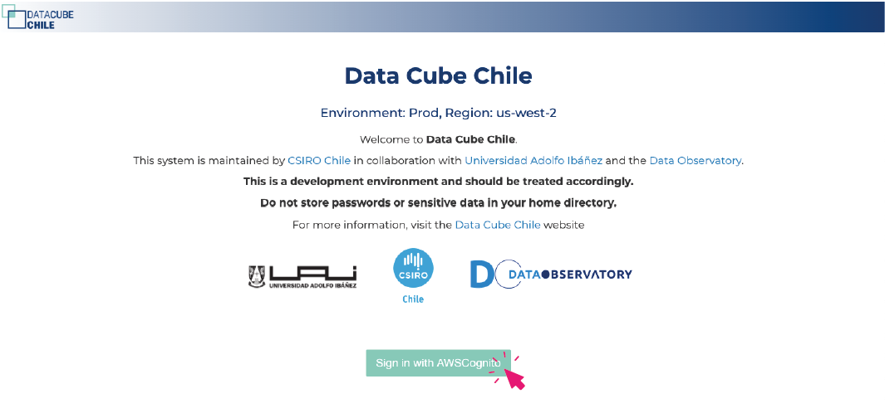
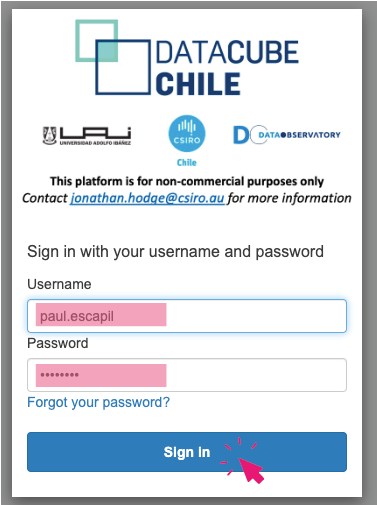
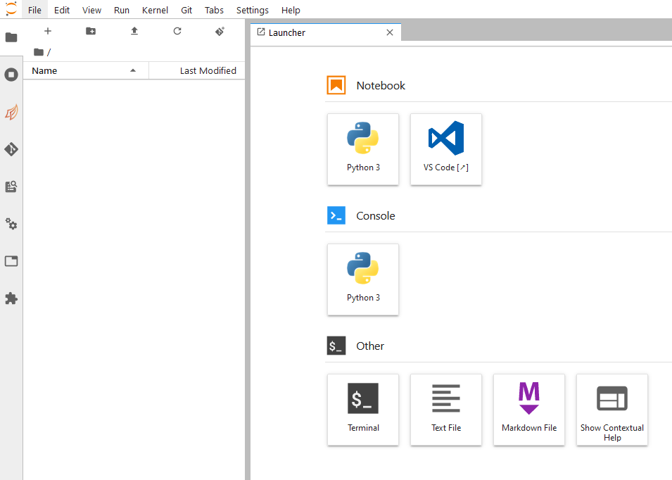
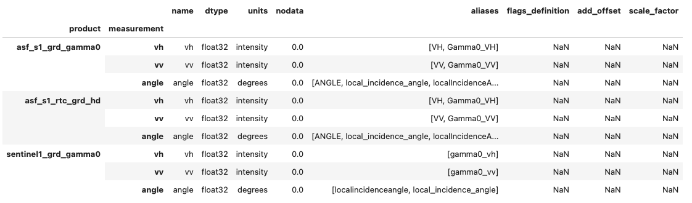
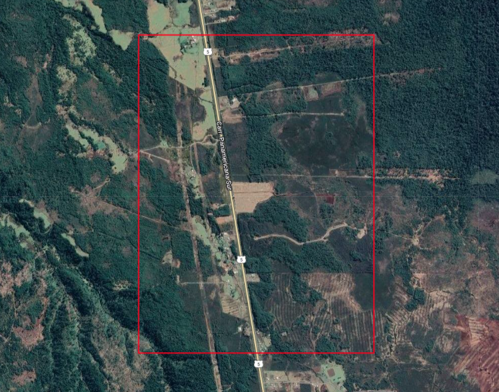
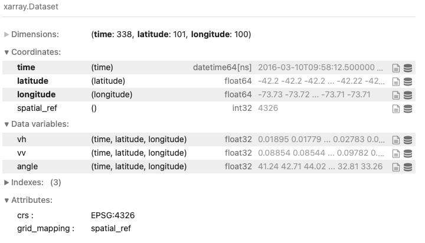
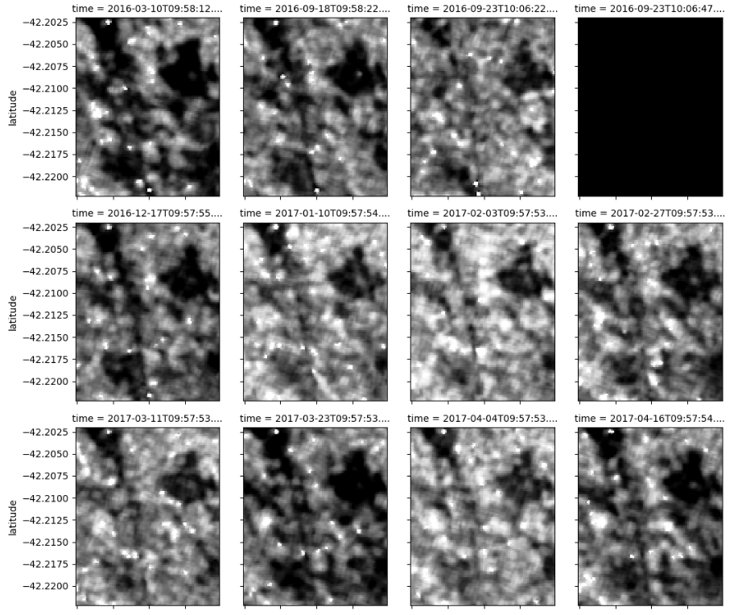
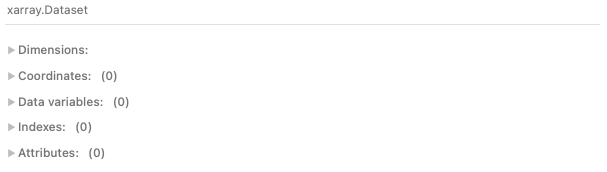
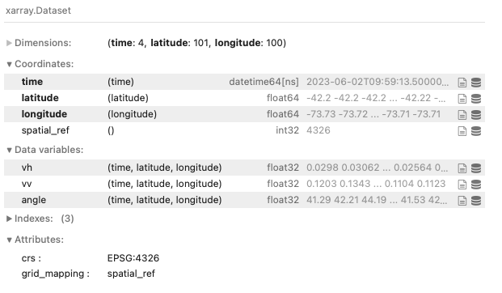
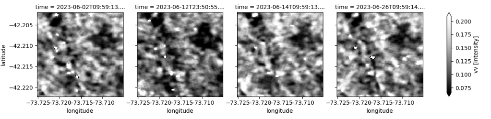

Data Cube
DataCube Entrenamiento
Repositorio contiene una serie de notebooks para funcionar con el DataCube Chile. Está dividido en niveles de dificultad y por ahora, sólo está disponible el entrenamiento básico, que sienta los primeros lineamientos para comenzar a trabajar en el cubo de datos.
Acceso al Sistema
Primeramente se debe acceder al siguiente link https://hub.datacubechile.cl/

Luego, haga click en el botón “Sign Up with AWSCognito” para acceder a la página de login.
Ingrese las credenciales proporcionadas por correo (usuario, contraseña), y haga click en “Sign in”.

Aparecerá la página de configuración del entorno virtual “Server Options” con 3 categorías “Resource Usage Allocation”, “Resource request” y “Jupyter profile”.
- En “Resource Usage Allocation”, de existir opciones, escojer la que corresponda según el proyecto en que está trabajando o las instrucciones del administrador.
- En “Resource request” escojer “DEFAULT” que consiste en la asignación de 8 CPU (cores), 32 GB de memoria RAM, sin GPU.
- En “Jupyter profile” escojer “Default Jupyter Python enviroment (master.lastest)”.
- Finalmente, deslizar hasta abajo y presionar Start.
Existen varias opciones (R, GPU, etc…), que pueden o no estar activas dependiendo de la configuración que tenga su cuenta. Estas opciones permiten lanzar instancias con imágenes distintas (es decir pre-configuraciones diferentes) y en caso de necesitar alguna en particular, deberá ponerse en contacto con el administrador del sistema.
Una vez que la instancia se haya lanzado, deberías llegar a esto:

Explorar Datos Sentinel 1
En esta sección se buscar explicar los pasos de exploración de los datos tipo SAR del Satélite Sentinel 1 en el Data Cube, además de su disponibilidad a la fecha de hoy ( 2023-11-25 ), con el objetivo facilitar el uso de datos en la plataforma como también informar la necesidad de actualización de los datos disponibles ya sea por tipo, corrección, fecha o región de estudio.
Siguiendo los pasos de la sección anterior se puede acceder a la la plataforma que dispone un “Jupyter Notebook” de trabajo, donde se creó un documento de trabajo llamado SAR_CD/DataProcessing/S1_explore.ipynb donde se registrarán la exploración de datos disponibles.
Productos Disponibles
Existen tres productos disponibles del Satelite Sentinel-1, que corresponden a los siguientes:
'asf_s1_grd_gamma0''asf_s1_rtc_grd_hd''sentinel1_grd_gamma0'

Definición de Parámetros
Para realizar consultas sobre la disponibilidad de productos satelitales SAR en diferentes regiones y fechas se definieron parámetros para se incluíudos en la query que corresponden a los siguientes:
latitude = -42.21212
longitude = -73.71519
buffer = 0.01
time = ("2016-01-01", "2023-12-31")
bands = ['vv','vh','angle']Las coordenadas corresponden al sitio ST_021 que es una tubera intervenida por acción humana.

Las fechas escogidas (“2016-01-01”, “2023-12-31”) fue solo para capturar la mayor cantidad de datos.
Datos asf_s1_grd_gamma0
El producto satelital S1 asf_s1_grd_gamma0 es el diponibiliza la mayor cantidad de imágenes en ese periodo y lugar, con un total de 338 registros.

A continuación se visualizan los primeros 12 imágenes disponibles en la región de estudio.

### Datos asf_s1_rtc_grd_hd
El producto satelital asf_s1_rtc_grd_hd no tiene registros de imágenes en el perodio y región de estudio

Datos sentinel1_grd_gamma0
El producto sentinel1_grd_gamma0 mantiene solo 4 registros de imágenes diponibles y todas del junio del 2023, como se observa a continuación:
 